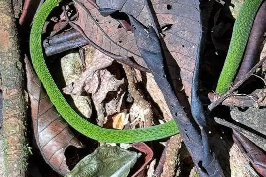
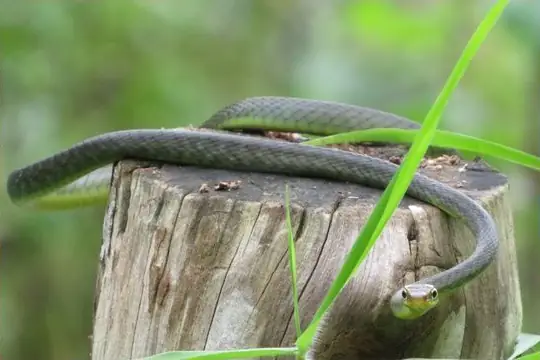
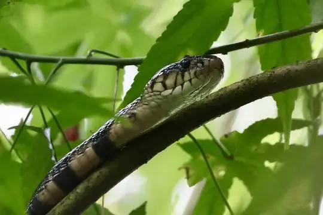
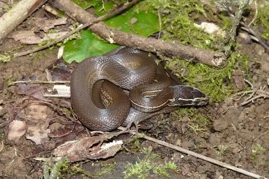

Snakes of São Tomé and Príncipe
4 living snake species are recorded in São Tomé and Príncipe in SnakeList: 1 venomous and 3 non-venomous, from 3 families.
- 4living species
- 1venomous
- 3non-venomous
- 3families
These totals count the unique living snake species SnakeList records in São Tomé and Príncipe. A species counts if it is recorded anywhere in the country, so not every snake lives in every part of it.
Species
Showing 4 species

Principe Green SnakeHapsidophrys principis
Sao Tome Wood SnakePhilothamnus thomensis
São Tomé CobraNaja peroescobari
Boaedon bedriagae
No snakes in Sao Tome and Principe match.
Sao Tome and Principe’s snakes in numbers
- Families: Colubridae 2, Elapidae 1, Lamprophiidae 1.
- 4 are recorded in no other country or territory in SnakeList: Principe Green Snake, Sao Tome Wood Snake, São Tomé Cobra, Boaedon bedriagae.
How precisely they are recorded
Of the 4 living species recorded in Sao Tome and Principe, 4 are recorded by island in SnakeList’s data. SnakeList records each species by island, not by exact spot, so a species listed for a island may live in only part of it.
Islands
The islands where SnakeList records snakes, with how many living species are recorded in each. Each page has its species, venomous snakes, families, the species found only there, its cities and neighbours.